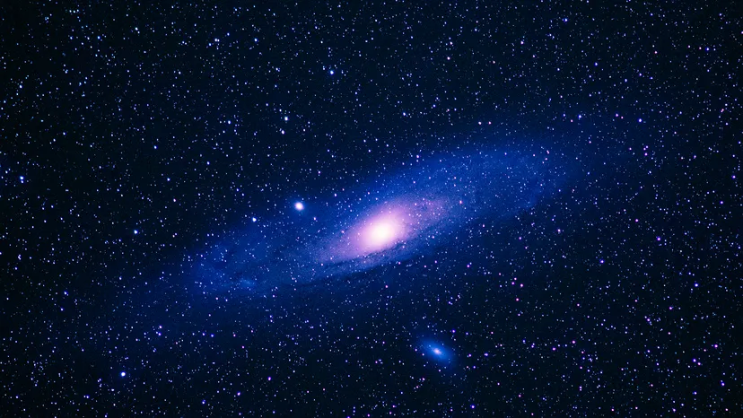

- Home - Earth - Animals - Space - Mysteries - History
Galaxies

What is a Galaxy?
A galaxy is a massive collection of billions of stars, gas clouds, interstellar dust, and Dark Matter. These components are held together by gravity and are considered the largest structures in the universe. Almost every large galaxy is believed to have a Supermassive Black Hole at its center.

Main Types of Galaxies
Galaxies are primarily classified into three types based on their shape:
- Spiral Galaxies: Shaped like a flat disk with a central bulge and spiral arms extending outward (e.g., The Milky Way).

- Elliptical Galaxies: Shaped like an egg or a sphere; these galaxies typically have very little new star formation.

- Irregular Galaxies: Galaxies that do not have a distinct or regular shape.

Our Home: The Milky Way

Our solar system is located within a galaxy called the Milky Way.
- Shape: It is a barred spiral galaxy.
- Size: It has a diameter of approximately 100,000 light-years.
- Star Count: It is estimated to contain between 100 to 400 billion stars.
- The Center: At the heart of the Milky Way lies a massive black hole known as Sagittarius A*.
Our Closest Neighbors
- Andromeda Galaxy: The closest major galaxy to the Milky Way, located about 2.5 million light-years away.

- Magellanic Clouds: Two smaller dwarf galaxies that orbit the Milky Way.

Galactic Collisions

Galaxies are not stationary; they move and can collide or merge with one another. Scientists predict that in about 4.5 billion years, the Milky Way and the Andromeda galaxy will collide to form a new giant galaxy, often referred to as "Milkomeda."
Interesting Fact
Modern astronomers believe there are approximately 2 trillion galaxies in the observable universe!